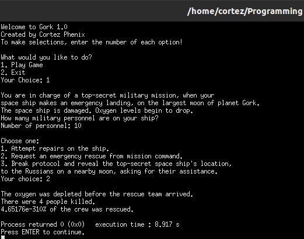

Text-Based Game, Percent is Queer

Here is the C++ source code
/*
Text-Based Game; Cortez Phenix
This program is a text-based game, made using functions and
conditional statements
*/
#include
#include
#include
using namespace std;
double menu (float crew_count);
double calculatePct(float crew_count, float number_of_deaths)
{
double percent = ((crew_count - number_of_deaths) / crew_count) * 100;
}
double welcome ()
{
int crew_count;
string backstory = "\nYou are in charge of a top-secret military mission, when your\nspace ship makes an emergency landing, on the largest moon of planet Gork.\nThe space ship is damaged. Oxygen levels begin to drop.\nHow many military personnel are on your ship?\nNumber of personnel: ";
cout << backstory;
cin >> crew_count;
if (crew_count >= 1)
menu(crew_count);
else if (crew_count < 1)
cout << "\nThere must be 1 or more members of the crew! Please enter a valid number!\n";
}
double menu (float crew_count)
{
double percent;
double main_option;
cout << "\nChoose one:\n1. Attempt repairs on the ship.\n2. Request an emergency rescue from mission command.\n3. Break protocol and reveal the top-secret space ship's location,\nto the Russians on a nearby moon, asking for their assistance.\nYour choice: ";
cin >> main_option;
if (main_option == 1)
{
cout << "\nToxic material on the moon has corroded the launch gear, and the \nlaunch exploded!\n\nThere were no survivors.\n";
}
else if (main_option == 2)
{
cout << "\nThe oxygen was depleted before the rescue team arrived.\nThere were 4 people killed.\n";
if (crew_count <=4)
cout << "0% of crew members were rescued!\n";
else
float percent = calculatePct(crew_count, 4);
cout << percent << "% of the crew was rescued.\n";
}
else if (main_option == 3)
{
cout << "\nThe Russians agree to send a rescue ship, but secretly attempt to hack into the ships systems remotely, which triggers an automatic shut down of all\ncommunications systems and locks all mission critical storage units, including\none of the storage unit that holds emergency oxygen tanks.\n\nOne quarter of all personnel are lost.\n";
}
else if (main_option != 1, 2, 3)
{
cout << "\nYou have been eaten by a Grue!\n";
}
}
int main()
{
cout << "Welcome to Gork 1.0\nCreated by Cortez Phenix\nTo make selections, enter the number of each option!\n\n";
int choice;
cout << "What would you like to do?\n1. Play Game\n2. Exit\nYour Choice: ";
cin >> choice;
if (choice == 1)
welcome();
else if (choice == 2)
cout << "\nGoodbye!\n";
else
cout << "\nPlease choose 1 or 2.\n";
return 0;
}